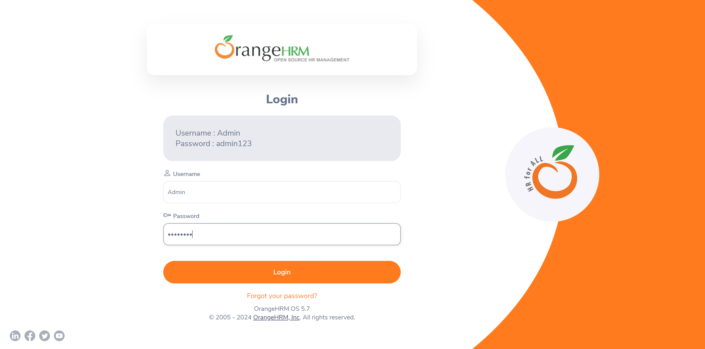
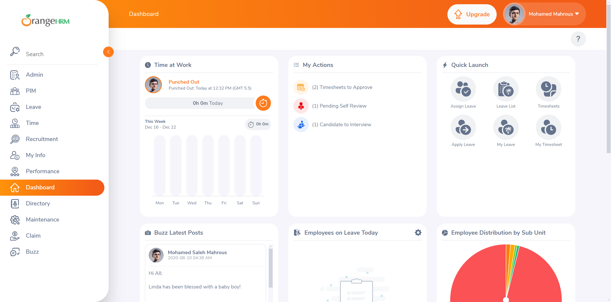

Started
Dec 18, 2024 07:24:37 am
Ended
Dec 18, 2024 07:27:31 am
Features Passed
0
Features Failed
2
Features
Scenarios
Steps
Timeline
Tags
| Name | Passed | Failed | Skipped | Others | Passed % |
|---|---|---|---|---|---|
| @smoke | 0 | 2 | 0 | 0 | 0% |
| @sanity | 1 | 1 | 0 | 0 | 50% |
| @regression | 1 | 13 | 0 | 0 | 7.143% |
System/Environment
| Name | Value |
|---|---|
| Engineer | hardik |
| Project | Orangehrm |
| os | Windows |
-
Login Functionality
07:24:38 / 00:01:17:292 Fail
Login Functionality
12.18.2024 07:24:38 12.18.2024 07:25:55 00:01:17:292 · #test-id=1FailVerify user should login successfullyGiven I enter username "Admin"And I enter password "admin123"When I click on the "Login" buttonThen I should see the "Welcome" messagecom.orangehrmlive.demo.steps.Hooks.tearDown(io.cucumber.java.Scenario)PassVerify that the logo displays on the home pageGiven I log in to the applicationThen I should see the OrangeHRM logo on the home pageFailVerify user should log out successfullyGiven I log in to the applicationWhen I click on the user profile logoAnd I mouse hover on "Logout" and clickThen I should see the text "LOGIN Panel"com.orangehrmlive.demo.steps.Hooks.tearDown(io.cucumber.java.Scenario)Verify user should log out successfullyFailVerify error message with invalid credentialsFailVerify error message with invalid credentialsGiven I enter username ""And I enter password ""When I click on the "Login" buttonThen I should see the error message "Required"com.orangehrmlive.demo.steps.Hooks.tearDown(io.cucumber.java.Scenario)FailVerify error message with invalid credentialsGiven I enter username "prime123@gmail.com"And I enter password ""When I click on the "Login" buttonStep skippedThen I should see the error message "Required"Step skippedcom.orangehrmlive.demo.steps.Hooks.tearDown(io.cucumber.java.Scenario)FailVerify error message with invalid credentialsGiven I enter username ""And I enter password "prime123"When I click on the "Login" buttonThen I should see the error message "Required"com.orangehrmlive.demo.steps.Hooks.tearDown(io.cucumber.java.Scenario)FailVerify error message with invalid credentialsGiven I enter username "prime123@gmail.com"And I enter password "prime123"When I click on the "Login" buttonThen I should see the error message "Invalid credentials"com.orangehrmlive.demo.steps.Hooks.tearDown(io.cucumber.java.Scenario)Verify error message with invalid credentials -
User
07:25:55 / 00:01:35:705 Fail
User
12.18.2024 07:25:55 12.18.2024 07:27:31 00:01:35:705 · #test-id=50FailAdmin should add user successfullyGiven I log in to the OrangeHRM applicationWhen I click on the "Admin" tabStep skippedThen I should see the text "System Users"Step skippedWhen I click on the "Add" buttonStep skippedThen I should see the text "Add User"Step skippedWhen I add a user with details:User Role Admin Employee Ananya Dash Username new.user Status Disable Password password123 Confirm password123 Step skippedThen I should see a success message "Successfully Saved"Step skippedcom.orangehrmlive.demo.steps.Hooks.tearDown(io.cucumber.java.Scenario)FailSearch the user created and verify itGiven I log in to the OrangeHRM applicationWhen I click on the "Admin" tabStep skippedThen I should see the text "System Users"Step skippedWhen I search for a user with details:Username new.user User Role Admin Status Disable Step skippedThen I should see the user in the result listStep skippedcom.orangehrmlive.demo.steps.Hooks.tearDown(io.cucumber.java.Scenario)FailVerify that admin should delete the user successfullyGiven I log in to the OrangeHRM applicationWhen I click on the "Admin" tabStep skippedThen I should see the text "System Users"Step skippedWhen I search for a user with details:Username new.user User Role Admin Status Disable Step skippedThen I should see the user in the result listStep skippedWhen I select the user by checking the checkboxStep skippedAnd I click on the "Delete" buttonStep skippedThen a confirmation popup should appearStep skippedWhen I confirm the popup by clicking "Ok"Step skippedThen I should see a success message "Successfully Deleted"Step skippedcom.orangehrmlive.demo.steps.Hooks.tearDown(io.cucumber.java.Scenario)FailSearch the user and verify the message record foundFailSearch the user and verify the message record foundGiven I log in to the OrangeHRM applicationWhen I click on the "Admin" tabStep skippedThen I should see the text "System Users"Step skippedWhen I search for a user with details:Username Admin User Role Admin Employee Name Paul Collings Status Enable Step skippedThen I should see the message "(1) Record Found"Step skippedAnd the result should display the username "Admin"Step skippedWhen I click on the "Reset" buttonStep skippedcom.orangehrmlive.demo.steps.Hooks.tearDown(io.cucumber.java.Scenario)FailSearch the user and verify the message record foundGiven I log in to the OrangeHRM applicationWhen I click on the "Admin" tabStep skippedThen I should see the text "System Users"Step skippedWhen I search for a user with details:Username Cassidy.Hope User Role ESS Employee Name Cassidy Hope Status Enable Step skippedThen I should see the message "(1) Record Found"Step skippedAnd the result should display the username "Cassidy.Hope"Step skippedWhen I click on the "Reset" buttonStep skippedcom.orangehrmlive.demo.steps.Hooks.tearDown(io.cucumber.java.Scenario)FailSearch the user and verify the message record foundGiven I log in to the OrangeHRM applicationWhen I click on the "Admin" tabStep skippedThen I should see the text "System Users"Step skippedWhen I search for a user with details:Username Nina.Patel User Role ESS Employee Name Nina Patel Status Enable Step skippedThen I should see the message "(1) Record Found"Step skippedAnd the result should display the username "Nina.Patel"Step skippedWhen I click on the "Reset" buttonStep skippedcom.orangehrmlive.demo.steps.Hooks.tearDown(io.cucumber.java.Scenario)Search the user and verify the message record foundFailSearch the user and verify the message record foundGiven I log in to the OrangeHRM applicationWhen I click on the "Admin" tabStep skippedThen I should see the text "System Users"Step skippedWhen I search for a user with details:Username Odis.Adalwin User Role Admin Employee Name Odis Adalwin Status Enable Step skippedThen I should see the message "(1) Record Found"Step skippedAnd the result should display the username "Odis.Adalwin"Step skippedWhen I click on the "Reset" buttonStep skippedcom.orangehrmlive.demo.steps.Hooks.tearDown(io.cucumber.java.Scenario)
-
@smoke
2 tests
@smoke
2 failedStatus Timestamp TestName Fail 07:24:38 am Verify user should login successfully Login Functionality.Verify user should login successfullyFail 07:25:55 am Admin should add user successfully User.Admin should add user successfully -
@sanity
2 tests
@sanity
1 passed 1 failedStatus Timestamp TestName Pass 07:24:53 am Verify that the logo displays on the home page Login Functionality.Verify that the logo displays on the home pageFail 07:26:21 am Search the user created and verify it User.Search the user created and verify it -
@regression
14 tests
@regression
1 passed 13 failedStatus Timestamp TestName Fail 07:24:38 am Verify user should login successfully Login Functionality.Verify user should login successfullyPass 07:24:53 am Verify that the logo displays on the home page Login Functionality.Verify that the logo displays on the home pageFail 07:24:58 am Verify user should log out successfully Login Functionality.Verify user should log out successfullyFail 07:25:04 am Verify error message with invalid credentials Login Functionality.Verify error message with invalid credentialsFail 07:25:20 am Verify error message with invalid credentials Login Functionality.Verify error message with invalid credentialsFail 07:25:24 am Verify error message with invalid credentials Login Functionality.Verify error message with invalid credentialsFail 07:25:31 am Verify error message with invalid credentials Login Functionality.Verify error message with invalid credentialsFail 07:25:55 am Admin should add user successfully User.Admin should add user successfullyFail 07:26:21 am Search the user created and verify it User.Search the user created and verify itFail 07:26:38 am Verify that admin should delete the user successfully User.Verify that admin should delete the user successfullyFail 07:26:43 am Search the user and verify the message record found User.Search the user and verify the message record foundFail 07:26:54 am Search the user and verify the message record found User.Search the user and verify the message record foundFail 07:27:00 am Search the user and verify the message record found User.Search the user and verify the message record foundFail 07:27:25 am Search the user and verify the message record found User.Search the user and verify the message record found
-
org.openqa.selenium.NoSuchWindowException
2 tests
org.openqa.selenium.NoSuchWindowException
2 failedStatus Timestamp TestName Fail 07:25:24 am And I enter password "" Login Functionality.Verify error message with invalid credentials.And I enter password ""Fail 07:25:24 am com.orangehrmlive.demo.steps.Hooks.tearDown(io.cucumber.java.Scenario) Login Functionality.Verify error message with invalid credentials.com.orangehrmlive.demo.steps.Hooks.tearDown(io.cucumber.java.Scenario) -
org.openqa.selenium.InvalidSelectorException
1 tests
org.openqa.selenium.InvalidSelectorException
1 failedStatus Timestamp TestName Fail 07:25:03 am Then I should see the text "LOGIN Panel" Login Functionality.Verify user should log out successfully.Then I should see the text "LOGIN Panel" -
org.openqa.selenium.remote.UnreachableBrowserException
18 tests
org.openqa.selenium.remote.UnreachableBrowserException
18 failedStatus Timestamp TestName Fail 07:24:43 am Then I should see the "Welcome" message Login Functionality.Verify user should login successfully.Then I should see the "Welcome" messageFail 07:24:53 am com.orangehrmlive.demo.steps.Hooks.tearDown(io.cucumber.java.Scenario) Login Functionality.Verify user should login successfully.com.orangehrmlive.demo.steps.Hooks.tearDown(io.cucumber.java.Scenario)Fail 07:25:07 am Then I should see the error message "Required" Login Functionality.Verify error message with invalid credentials.Then I should see the error message "Required"Fail 07:25:20 am com.orangehrmlive.demo.steps.Hooks.tearDown(io.cucumber.java.Scenario) Login Functionality.Verify error message with invalid credentials.com.orangehrmlive.demo.steps.Hooks.tearDown(io.cucumber.java.Scenario)Fail 07:25:27 am Then I should see the error message "Required" Login Functionality.Verify error message with invalid credentials.Then I should see the error message "Required"Fail 07:25:31 am com.orangehrmlive.demo.steps.Hooks.tearDown(io.cucumber.java.Scenario) Login Functionality.Verify error message with invalid credentials.com.orangehrmlive.demo.steps.Hooks.tearDown(io.cucumber.java.Scenario)Fail 07:25:58 am Given I log in to the OrangeHRM application User.Admin should add user successfully.Given I log in to the OrangeHRM applicationFail 07:26:21 am com.orangehrmlive.demo.steps.Hooks.tearDown(io.cucumber.java.Scenario) User.Admin should add user successfully.com.orangehrmlive.demo.steps.Hooks.tearDown(io.cucumber.java.Scenario)Fail 07:26:24 am Given I log in to the OrangeHRM application User.Search the user created and verify it.Given I log in to the OrangeHRM applicationFail 07:26:38 am com.orangehrmlive.demo.steps.Hooks.tearDown(io.cucumber.java.Scenario) User.Search the user created and verify it.com.orangehrmlive.demo.steps.Hooks.tearDown(io.cucumber.java.Scenario)Fail 07:26:41 am Given I log in to the OrangeHRM application User.Verify that admin should delete the user successfully.Given I log in to the OrangeHRM applicationFail 07:26:43 am com.orangehrmlive.demo.steps.Hooks.tearDown(io.cucumber.java.Scenario) User.Verify that admin should delete the user successfully.com.orangehrmlive.demo.steps.Hooks.tearDown(io.cucumber.java.Scenario)Fail 07:26:46 am Given I log in to the OrangeHRM application User.Search the user and verify the message record found.Given I log in to the OrangeHRM applicationFail 07:26:54 am com.orangehrmlive.demo.steps.Hooks.tearDown(io.cucumber.java.Scenario) User.Search the user and verify the message record found.com.orangehrmlive.demo.steps.Hooks.tearDown(io.cucumber.java.Scenario)Fail 07:26:57 am Given I log in to the OrangeHRM application User.Search the user and verify the message record found.Given I log in to the OrangeHRM applicationFail 07:27:00 am com.orangehrmlive.demo.steps.Hooks.tearDown(io.cucumber.java.Scenario) User.Search the user and verify the message record found.com.orangehrmlive.demo.steps.Hooks.tearDown(io.cucumber.java.Scenario)Fail 07:27:28 am Given I log in to the OrangeHRM application User.Search the user and verify the message record found.Given I log in to the OrangeHRM applicationFail 07:27:31 am com.orangehrmlive.demo.steps.Hooks.tearDown(io.cucumber.java.Scenario) User.Search the user and verify the message record found.com.orangehrmlive.demo.steps.Hooks.tearDown(io.cucumber.java.Scenario) -
org.openqa.selenium.NoSuchElementException
2 tests
org.openqa.selenium.NoSuchElementException
2 failedStatus Timestamp TestName Fail 07:25:35 am Then I should see the error message "Invalid credentials" Login Functionality.Verify error message with invalid credentials.Then I should see the error message "Invalid credentials"Fail 07:27:03 am Given I log in to the OrangeHRM application User.Search the user and verify the message record found.Given I log in to the OrangeHRM application